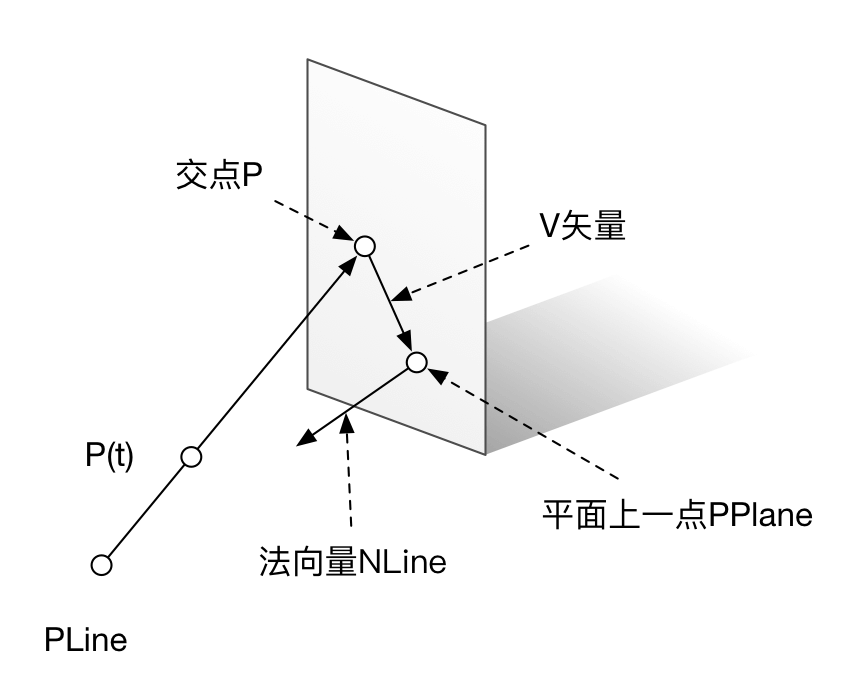

如何写一个球面Ray tracing程序(1)
直线与平面的交点¶
在Ray tracing的时候，如果光线最终打到一个平面屏幕上，就需要知道每个光线的落点。直线和平面的交点求解比较简单，先用来练手热身。

直线的表示¶
一条直线上任意一点P可以用直线上已知一点PLine，和直线方向的向量NLine来表示，写出参数方程就是，注意啊，这里的PLine,NLine都是矢量，但t是标量, 有如下(1)式 $$ P_{(t)}= P_{Line}+t \times N_{Line} $$
平面的表示¶
一个平面，可以用平面上已知一点PPlane，和垂直于这个平面的法向量NPlane来表示。
用参数方程求交点¶
假设现在直线与平面交点是P点，那么可以画一个从平面上已知点PPlane到P点的向量，比如叫V=P-PPlane
代入上面（1）式 得到(2)式 $$ V=P_t-P_{Plane} \\ V=(P_{Line}+t \times N_{Line}) -P_{Plane} $$
显然V矢量是在平面内的，那么“垂直于这个平面的法向量NPlane”当然也垂直于V矢量，NPlane⊥V，这件事情在数学上有明确的表示，就是NPlane矢量和V矢量的dot product是等于0的。 $$ dot(V,N_{Plane})=0 $$
把V替换成(2)式
$$ dot(P_{Line}+t \times N_{Line}-P_{Plane}, N_{Plane})=0 $$dot product是满足分配律的，于是有 $$ dot(P_{Line}-P_{Plane}, N_{Plane}) + dot( t \times N_{Line}, N{Plane})=0 $$
其中t是标量，可以提取到dot product外面来 $$ dot(P_{Line}-P_{Plane}, N_{Plane}) + t \times dot( N_{Line}, N{Plane})==0 $$ 化简一下：
$$ t= - \frac{dot(P_{Line}-P_{Plane}, N_{Plane})}{dot( N_{Line}, N{Plane})} $$里面再调换一下位置，把难看的负号去掉。铛铛：
$$ t=\frac{dot(P_{Plane}-P_{Line}, N_{Plane})}{dot( N_{Line}, N{Plane})} $$这就是程序里算出t的方法了。有t的值，只要代入(1)式就可以求出交点P了。
import numpy as np
def lineCrossPlane(PLine, NLine,PPlane,NPlane):
'''
直线以起点PLine和方向向量NLine表示
平面以平面上一点PPlane和法向量NPlane表示
求其交点P
直线有多组，平面仅一个
'''
tup=np.dot((PPlane-PLine),NPlane)
tdown=np.dot(NLine,NPlane)
t=tup/tdown
t=np.expand_dims(t,axis=1) # 为了满足与t与NLine的乘法, 需要将t扩展一维
P=PLine+t*NLine
return P
# 测试结果:
if __name__=="__main__":
pline=np.array([[0,0,0],[0,1,2]])
nline=np.array([[1,0,0],[1,0,0]])
pplane=np.array([5,0,0])
nplane=np.array([1,0,0])
print(lineCrossPlane(pline,nline,pplane,nplane))